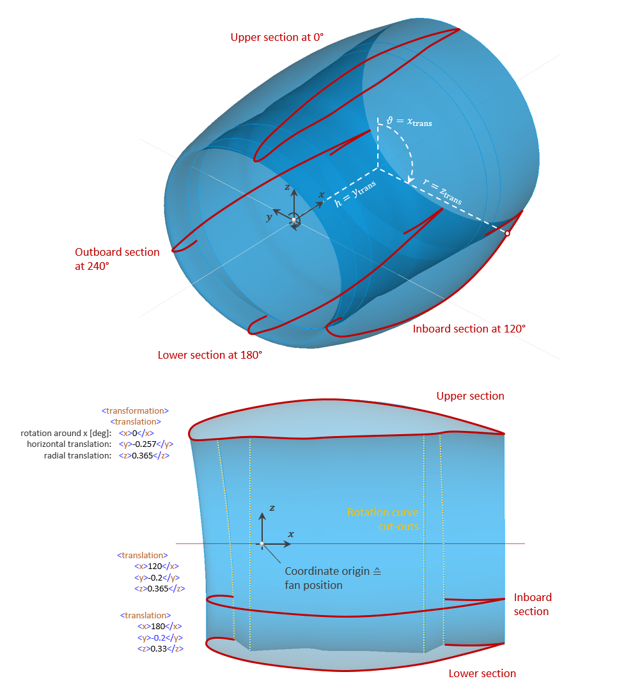

complexType · extension complexBaseType · all
Section
An engine nacelle is defined by sections, where at least one and up to an infinite number of sections can be specified. Lofting of the nacelle surface along the sections is done in cylindrical coordinates. The coordinate origin refers to the center of the fan, i.e. the sections and their profiles are typically shifted in negative x-direction.
Note: In the current CPACS release, transformations are still labeled as Cartesian coordinates. It is current work in progress to explicitly introduce cylindrical coordinates. Until this is implemented in a future CPACS release, the implicit conventions listed below apply:
| Translation component | Cylindrical coordinate equivalent | Description |
| x | ϑ | Rotation angle around x |
| y | h | Horizontal translation |
| z | r | Radial translation |
The following example illustrates the setup of a nacelle with 4 sections. These are rotated by 0, 120, 180 and 240 degrees around the x-axis (given by translation/x). To illustrate the possible transformations, the profile of the upper section is shifted slightly further in the negative x-direction (translation/y), while the lower section has a smaller radial distance from the rotation axis (translation/z). In addition, the sections are scaled differently (transformation/scaling; not shown in the example figures) in order to create a straight trailing edge and to realize a flattened profile near the ground.
The following example also shows the profile cut-outs due to the radially symmetric inner region of the nacelle defined by therotationCurve. For detailed information, please refer to the documentation of the rotationCurve element.

The first section is not rotated (x=ϑ=0), but shifted vertically in negative direction (y=h=-0.257). The radial distance is given by z=r=0.365:
<section uID="fanCowl_upperSection">
<name>Upper section</name>
<transformation>
<scaling>
<x>1.055</x>
<y>1</y>
<z>1</z>
</scaling>
<translation>
<x>0.0</x>
<y>-0.257</y>
<z>0.365</z>
</translation>
</transformation>
<profileUID>fanCowlUpperSectionProfile</profileUID>
</section>The second section is rotated around the x-axis (x=ϑ=120) as well as scaled by a factor of 1.1 in its profile height:
<section uID="fanCowl_inboardSection">
<name>Inboard section</name>
<transformation>
<scaling>
<x>1</x>
<y>1</y>
<z>1.1</z>
</scaling>
<translation>
<x>120.0</x>
<y>-0.2</y>
<z>0.365</z>
</translation>
</transformation>
<profileUID>fanCowlUpperSectionProfile</profileUID>
</section>The third section is rotated around the x-axis by 180° and scaled by a factor of 0.8 in its profile height:
<section uID="fanCowl_lowerSection">
<name>Lower section</name>
<transformation>
<scaling>
<x>1</x>
<y>1</y>
<z>0.8</z>
</scaling>
<translation>
<x>180.0</x>
<y>-0.2</y>
<z>0.33</z>
</translation>
</transformation>
<profileUID>fanCowlUpperSectionProfile</profileUID>
</section>| Name | Type | Constraints | Use | Default | Description |
|---|---|---|---|---|---|
@externalDataDirectory | xsd:string | optional | Directory of the external data file | ||
@externalDataNodePath | xsd:string | optional | Path of the node inside the external data file | ||
@externalFileName | xsd:string | optional | Name of the external data file | ||
@uID | xsd:ID | required | UID |
| Name | Type | Constraints | OccurrenceHow often the element may appear at this place. The schema writes it as minOccurs and maxOccurs on the declaration. | Default | Description |
|---|---|---|---|---|---|
| allThe children below may appear in any order. Each may appear at most once. | |||||
name | stringBaseType | [1..1] required | Name | ||
description | stringBaseType | [0..1] optional | Description | ||
transformation | transformationType | [1..1] required | Position and orientation | ||
profileUID | stringUIDBaseType | [1..1] required | UID of the profile | ||
cpacs/vehicles/engines/engine/nacelle/fanCowl/sections/sectioncpacs/vehicles/engines/engine/nacelle/coreCowl/sections/section| Type | Name |
|---|---|
nacelleSectionsType | section |